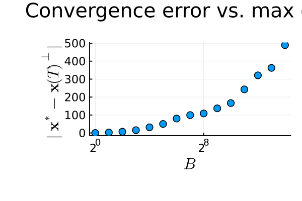

Convergence Bounds vs. Maximum Delay B
This experiment examines the relationship between the maximum delay parameter $B$ and the final distance of the iterates from the nearest global section.
The setup is a 4-regular graph with $n=20$ agents and semi-orthogonal (rank-1) restriction maps. For each of 15 values of $B = 2^0, 2^1, \ldots, 2^{14}$, we run three trials of deterministic periodic asynchronous diffusion (one trial per random phase realization) with step size $\gamma = 1/K$ and report the average final distance to the nearest global section $\mathbf{x}^*$.
The plot shows that convergence degrades gracefully as $B$ grows, consistent with the theoretical bound in [CITATION].
Data source: Pre-generated by docs/scripts/acc26_experiments.jl. To regenerate the data and re-render the figure, run:
julia --project=docs docs/scripts/acc26_experiments.jl
julia --project=docs docs/scripts/generate_figures.jl